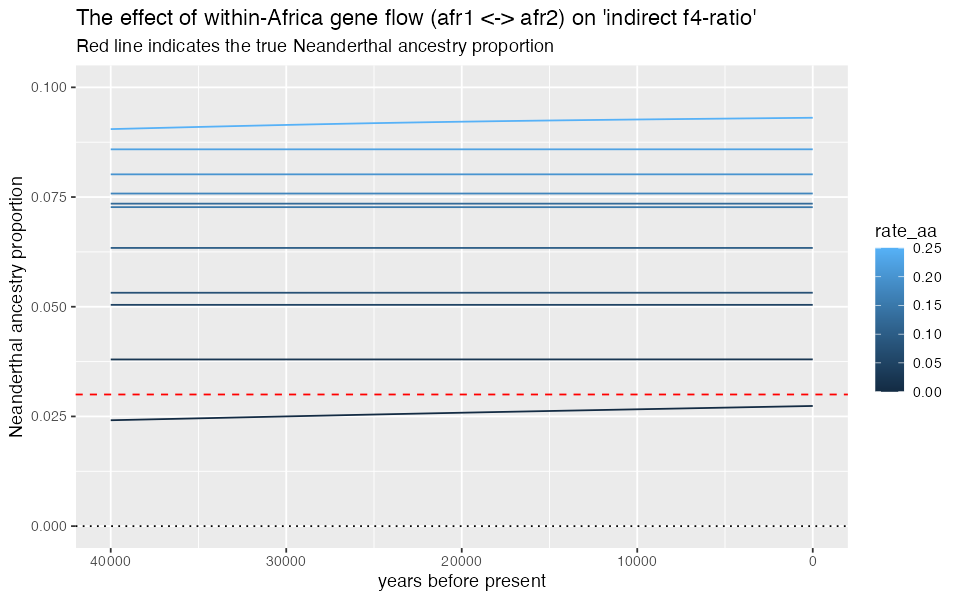
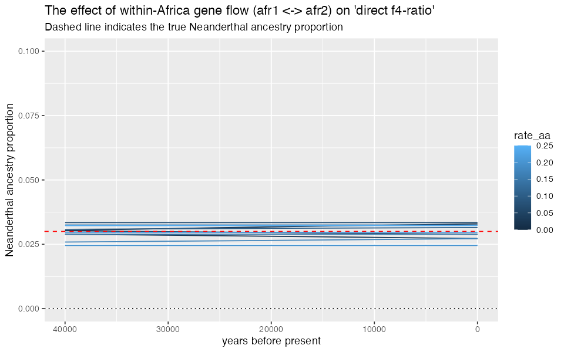
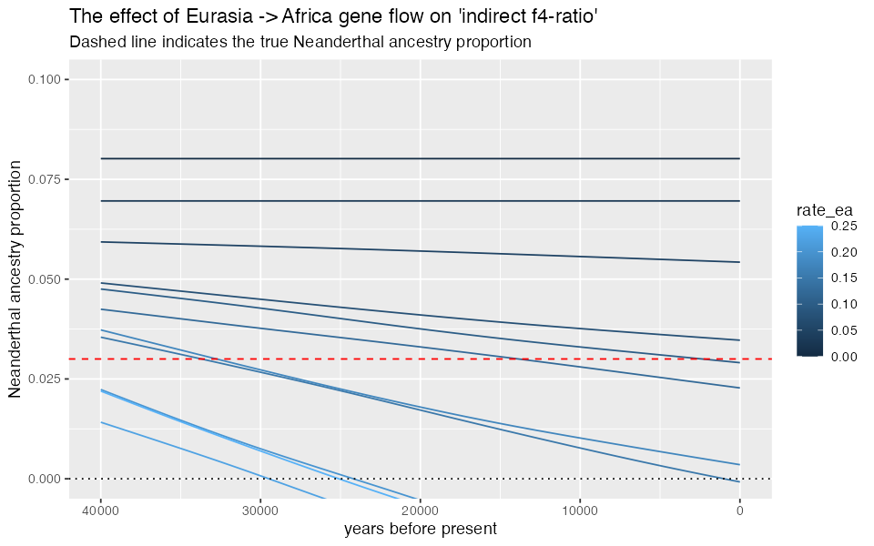
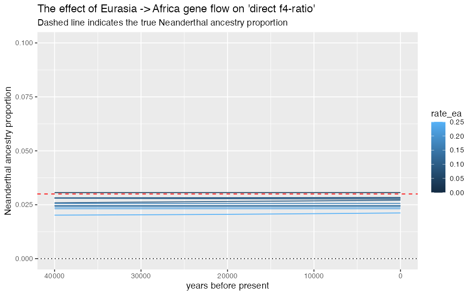

⚠️⚠️⚠️
Note: The demografr R package is still under active development. As a result, its documentation is in a draft stage at best. Apologies for typos, inconsistencies, and other issues.
⚠️⚠️⚠️
Although Approximate Bayesian Computation is arguably the most popular method for simulation-based inference, it’s certainly not the only one. Another useful method for exploring the behavior of statistics under given combination of model parameters, and perhaps even very simple model parameter fitting are grid simulations. Briefly, we define a set of parameters of a model, run simulation replicates for each combination of parameters, computing summary statistics of interest for each replicat, and then—for instance—inspect which parameter combinations lead to the values of summary statistics closes to those we observed in the data, or simply inspect how do different parameter values affect the statistics in general.
Example analysis
To demonstrate the features of demografr for grid-based simulation inference, let’s try to reproduce (at least qualitatively) the result from Petr et al. (PNAS 2018). Briefly, this paper made an attempt to explain discrepancies between two different ways to estimate the proportion of Neanderthal ancestry in Europe over tens of thousands of years.
- The first statistic (dubbed the “indirect \(f_4\)-ratio” statistic) showed the following pattern of Neanderthal ancestry significantly declining over time (figure from Fu _et al., Nature 2016)

- An alternative statistic (called “direct \(f_4\)-ratio” statistic, shown in the figure below in solid line in contrast to the “indirect \(f_4\)-statistic” as dashed line) did not find any significant decline at all as shown in this figure from Petr et al. (PNAS 2018).

The question was, why are these two measures of Neanderthal ancestry leading to different conclusions? Could some violations of their assumptions (such as unnacounted-for gene-flow events between modern human populations) break one of them?
The way the PNAS 2018 study approached the problem was tu run many simulation replicates across a large parameter grid. This required writing custom coalescent simulations, orchestrating running them across the parameter grid, collecting outputs, and computing population genetic statistics (here direct and indirect \(f_4\)-ratios)—all in all, a couple of hundred lines of Python, R, and bash.
This vignette shows how to use demografr to perform this kind of analyses in a much more straightforward and reproducible manner, entirely in R.
Grid simulation with demografr
1. Define a slendr model function capturing the demographic history
As in any standard ABC pipeline using demografr, we leverage the slendr R package to first define a demografic model, encoding it as a simple R function. Again, as with standard ABC, the arguments of this function correspond to model parameters. Note that those will come from the parameter grid, not via sampling from priors as with ABC!
In our example, because the research question of interest involved various gene-flow rates between populations in the model, we fix split times and \(N_e\) values because they are not that interesting or important for this simple analysis (we ignore the Eurasia to Africa “backflow” for the same reason):
model <- function(rate_ea, rate_aa) {
# create populations
chimp <- population("chimp", time = 7e6, N = 10000)
anc <- population("anc", time = 6e6, N = 10000, parent = chimp)
nea <- population("nea", time = 600e3, N = 2000, parent = anc)
afr1 <- population("afr1", time = 600e3, N = 15000, parent = anc)
afr2 <- population("afr2", time = 150e3, N = 15000, parent = afr1)
eur <- population("eur", time = 75e3, N = 5000, parent = afr2)
# define gene-flow events
gf <- list(
# back flow from Eurasia into Africa -- one parameter of interest
gene_flow(from = eur, to = afr1, start = 5e3, end = 0, rate = rate_ea),
gene_flow(from = eur, to = afr2, start = 5e3, end = 0, rate = rate_ea),
# gene flow within Africa -- another parameter of interest
gene_flow(from = afr1, to = afr2, start = 50e3, end = 0, rate = rate_aa),
gene_flow(from = afr2, to = afr1, start = 50e3, end = 0, rate = rate_aa),
# Neanderthal introgression (fixed to 3%)
gene_flow(from = nea, to = eur, start = 60e3, end = 50e3, rate = 0.03)
)
# generate a slendr model
model <- compile_model(
populations = list(chimp, anc, nea, afr1, afr2, eur), gene_flow = gf,
generation_time = 30, serialize = FALSE
)
# specify sampling events
samples <- rbind(
# Altai (70 kya) and Vindija (40 kya) Neanderthals
schedule_sampling(model, times = c(70e3, 40e3), list(nea, 1)),
# Europeans from 40 kya to the present
schedule_sampling(model, times = seq(40000, 0, -2000), list(eur, 1)),
# two African populations
schedule_sampling(model, times = 0, list(afr1, 1), list(afr2, 1)),
# Chimpanzee outgroup
schedule_sampling(model, times = 0, list(chimp, 1))
)
return(list(model, samples))
}Let’s check the model function by visualizing it (we set the gene-flow rates to arbitrary values, because this is purely a visualization test):
test_model <- model(rate_ea = 0.42, rate_aa = 0.42)[[1]]
# we don't plot the gene flow arrows here for clarity
cowplot::plot_grid(
plot_model(test_model, gene_flow = FALSE),
plot_model(test_model, log = TRUE, gene_flow = FALSE)
)The model looks OK, so in the next step we define tree-sequence popgen summary statistics we are interested in (again, just as we would for an ABC pipeline).
2. Define summary statistics
Recall that we want to explore the impact of modern-human gene flow on Neanderthal ancestry as inferred using two ways of computing it: “indirect” and “direct” \(f_4\)-ratio statistics.
Because our model samples 21 European individuals across the last 40 thousand years, we will compute the \(f_4\)-ratio statistics on all of these individuals in sequence.
demografr uses the R package slendr not just for encoding demographic models and popgen simulations, but also for analysis of tree sequences via its interface to the powerful library tskit. One advantage of slendr is that it allows referring to simulated samples via their “symbolic names”. This means that, for instance, the first individual sampled from a population “eur” is named “eur_1”, the second is named as “eur_2”, etc. Therefore, we can capture the names of every European individual in a vector X by running:
X <- paste0("eur_", 1:21)
X#> [1] "eur_1" "eur_2" "eur_3" "eur_4" "eur_5" "eur_6" "eur_7" "eur_8"
#> [9] "eur_9" "eur_10" "eur_11" "eur_12" "eur_13" "eur_14" "eur_15" "eur_16"
#> [17] "eur_17" "eur_18" "eur_19" "eur_20" "eur_21"and use this vector as input for any tree-sequence function of slendr/tskit. Specifically, we can define the “indirect” and “direct” \(f_4\)-ratio statistics in this way (using the equations defined in the figure above):
# compute the "indirect" f4-ratio statistic via slendr/tskit function ts_f4ratio,
# returning its data frame output as it is
indirect <- function(ts) {
X <- paste0("eur_", 1:21)
ts_f4ratio(ts, X = X, A = "afr1_1", B = "afr2_1", C = "nea_2", O = "chimp_1")
}
# compute the "direct" f4-ratio statistic via slendr/tskit function ts_f4ratio,
# returning its data frame output as it is
direct <- function(ts) {
X <- paste0("eur_", 1:21)
ts_f4ratio(ts, X = X, A = "nea_2", B = "nea_1", C = "afr1_1", O = "chimp_1")
}Exactly as it’s the case for ABC, for the purposes of grid-based simulations we have to
# bind both functions in a named list
functions <- list(direct = direct, indirect = indirect)This looks quite neat and tidy, but how can we make sure that our tree-sequence summary functions really work? We need a tree-sequence object as an input first! demografr provides an easy way to get an arbitrary tree sequence from a model function via its helper function simulate_ts. The simples way to use it is like this:
# we don't care about the parameter values, as we only want to get *some* tree sequence
# (also, note we did not specify sequence length, recombination rate, etc.)
ts <- simulate_ts(model, parameters = list(rate_ea = 0.1, rate_aa = 0.15), mutation_rate = 1e-8)With the tiny tree sequence for testing, we can now check if our tree-sequence functions work as they’re supposed to:
functions$direct(ts)#> # A tibble: 21 × 6
#> X A B C O alpha
#> <chr> <chr> <chr> <chr> <chr> <dbl>
#> 1 eur_1 nea_2 nea_1 afr1_1 chimp_1 0.00156
#> 2 eur_2 nea_2 nea_1 afr1_1 chimp_1 0
#> 3 eur_3 nea_2 nea_1 afr1_1 chimp_1 0.434
#> 4 eur_4 nea_2 nea_1 afr1_1 chimp_1 0.434
#> 5 eur_5 nea_2 nea_1 afr1_1 chimp_1 0
#> 6 eur_6 nea_2 nea_1 afr1_1 chimp_1 0.218
#> 7 eur_7 nea_2 nea_1 afr1_1 chimp_1 0.00156
#> 8 eur_8 nea_2 nea_1 afr1_1 chimp_1 0.00156
#> 9 eur_9 nea_2 nea_1 afr1_1 chimp_1 0.00156
#> 10 eur_10 nea_2 nea_1 afr1_1 chimp_1 0.00156
#> # ℹ 11 more rows
functions$indirect(ts)#> # A tibble: 21 × 6
#> X A B C O alpha
#> <chr> <chr> <chr> <chr> <chr> <dbl>
#> 1 eur_1 afr1_1 afr2_1 nea_2 chimp_1 1.89
#> 2 eur_2 afr1_1 afr2_1 nea_2 chimp_1 1.86
#> 3 eur_3 afr1_1 afr2_1 nea_2 chimp_1 -0.00832
#> 4 eur_4 afr1_1 afr2_1 nea_2 chimp_1 -0.00832
#> 5 eur_5 afr1_1 afr2_1 nea_2 chimp_1 1.86
#> 6 eur_6 afr1_1 afr2_1 nea_2 chimp_1 0.859
#> 7 eur_7 afr1_1 afr2_1 nea_2 chimp_1 1.73
#> 8 eur_8 afr1_1 afr2_1 nea_2 chimp_1 1.89
#> 9 eur_9 afr1_1 afr2_1 nea_2 chimp_1 1.89
#> 10 eur_10 afr1_1 afr2_1 nea_2 chimp_1 1.73
#> # ℹ 11 more rowsExcellent, we get the output tables from ts_f4ratio functions as we’re supposed to (and get one estimate for each of the 21):
functions$direct(ts) %>% nrow#> [1] 21
functions$indirect(ts) %>% nrow#> [1] 213. Define a parameter grid
Finally (and yet again, analogously to an equivalent ABC pipeline) we define parameters. Specifically, for a grid simulation, we define a data frame with one column for each parameter of the slendr model function (the names of parameter columns must match the model function arguments!). For this purpose, the function crossing from the tidyr R package is particularly helpful, so let’s use it here:
#> # A tibble: 6 × 2
#> rate_aa rate_ea
#> <dbl> <dbl>
#> 1 0 0
#> 2 0 0.025
#> 3 0 0.05
#> 4 0 0.075
#> 5 0 0.1
#> 6 0 0.125In this way, we defined 121 parameter combinations and can finally proceed to the simulation inference.
4. Perform grid-based simulations, compute summary statistics for each
In a final analogy to the ABC inference with demografr, we have a function simulate_grid() which performs the equivalent to simulate_abc(). In fact, the function has a nearly identical interface—we plug in the model function, our parameter grid, the list of summary tree-sequence functions, the number of simulation replicates to perform for each parameter combination (and a few other obvious parameters shown here).
First, we will set up an automated parallelization scheme using the future R package:
library(future)
# parallelize simulations across all CPUs of the machine
plan(multicore, workers = availableCores())(See much more detail on parallelization of demografr inference pipelines in this vignette).
results <- simulate_grid(
model, grid, functions, replicates = 50,
sequence_length = 25e6, mutation_rate = 1e-8, recombination_rate = 1e-8
)The total runtime for the grid simulations was 0 hours 22 minutes 14 seconds parallelized across 96 CPUs.
5. Analyze results
The function simulate_grid() returns all results in a data frame object in the following format:
print(results, n = 10)#> # A tibble: 6,050 × 5
#> rep rate_aa rate_ea direct indirect
#> <int> <dbl> <dbl> <list> <list>
#> 1 1 0 0 <tibble [21 × 6]> <tibble [21 × 6]>
#> 2 1 0 0.025 <tibble [21 × 6]> <tibble [21 × 6]>
#> 3 1 0 0.05 <tibble [21 × 6]> <tibble [21 × 6]>
#> 4 1 0 0.075 <tibble [21 × 6]> <tibble [21 × 6]>
#> 5 1 0 0.1 <tibble [21 × 6]> <tibble [21 × 6]>
#> 6 1 0 0.125 <tibble [21 × 6]> <tibble [21 × 6]>
#> 7 1 0 0.15 <tibble [21 × 6]> <tibble [21 × 6]>
#> 8 1 0 0.175 <tibble [21 × 6]> <tibble [21 × 6]>
#> 9 1 0 0.2 <tibble [21 × 6]> <tibble [21 × 6]>
#> 10 1 0 0.225 <tibble [21 × 6]> <tibble [21 × 6]>
#> # ℹ 6,040 more rowsThe first column indicates a replicate number, the following few columns are the values of the parameter grid. Most important are the last columns, though, each named after a single summary statistics. For conciseness, these summary statistics are stored as so-called “list columns”—for each replicate and each parameter combination, these columns store the summary statistics as “nested” data frames like this:
results$direct[1:2]#> [[1]]
#> # A tibble: 21 × 6
#> X A B C O alpha
#> <chr> <chr> <chr> <chr> <chr> <dbl>
#> 1 eur_1 nea_2 nea_1 afr1_1 chimp_1 0.0561
#> 2 eur_2 nea_2 nea_1 afr1_1 chimp_1 0.0603
#> 3 eur_3 nea_2 nea_1 afr1_1 chimp_1 0.0817
#> 4 eur_4 nea_2 nea_1 afr1_1 chimp_1 0.102
#> 5 eur_5 nea_2 nea_1 afr1_1 chimp_1 0.0669
#> 6 eur_6 nea_2 nea_1 afr1_1 chimp_1 0.0773
#> 7 eur_7 nea_2 nea_1 afr1_1 chimp_1 0.0746
#> 8 eur_8 nea_2 nea_1 afr1_1 chimp_1 0.0674
#> 9 eur_9 nea_2 nea_1 afr1_1 chimp_1 0.0514
#> 10 eur_10 nea_2 nea_1 afr1_1 chimp_1 0.0441
#> # ℹ 11 more rows
#>
#> [[2]]
#> # A tibble: 21 × 6
#> X A B C O alpha
#> <chr> <chr> <chr> <chr> <chr> <dbl>
#> 1 eur_1 nea_2 nea_1 afr1_1 chimp_1 0.0106
#> 2 eur_2 nea_2 nea_1 afr1_1 chimp_1 0.00153
#> 3 eur_3 nea_2 nea_1 afr1_1 chimp_1 0.00617
#> 4 eur_4 nea_2 nea_1 afr1_1 chimp_1 0.0250
#> 5 eur_5 nea_2 nea_1 afr1_1 chimp_1 0.0111
#> 6 eur_6 nea_2 nea_1 afr1_1 chimp_1 0.00780
#> 7 eur_7 nea_2 nea_1 afr1_1 chimp_1 0.0189
#> 8 eur_8 nea_2 nea_1 afr1_1 chimp_1 0.0143
#> 9 eur_9 nea_2 nea_1 afr1_1 chimp_1 0.0129
#> 10 eur_10 nea_2 nea_1 afr1_1 chimp_1 0.00678
#> # ℹ 11 more rowsList columns are very efficient and concise for storing complex data like this, but in order to be able to analyze data stored in them, we need a function unnest() from tidyverse, which “explodes” a list-column with stored data frames into a wider data frame which can be immediately analyzed. In this example:
Direct f4-ratio:
results %>% unnest(direct)#> # A tibble: 127,050 × 10
#> rep rate_aa rate_ea X A B C O alpha indirect
#> <int> <dbl> <dbl> <chr> <chr> <chr> <chr> <chr> <dbl> <list>
#> 1 1 0 0 eur_1 nea_2 nea_1 afr1_1 chimp_1 0.0561 <tibble>
#> 2 1 0 0 eur_2 nea_2 nea_1 afr1_1 chimp_1 0.0603 <tibble>
#> 3 1 0 0 eur_3 nea_2 nea_1 afr1_1 chimp_1 0.0817 <tibble>
#> 4 1 0 0 eur_4 nea_2 nea_1 afr1_1 chimp_1 0.102 <tibble>
#> 5 1 0 0 eur_5 nea_2 nea_1 afr1_1 chimp_1 0.0669 <tibble>
#> 6 1 0 0 eur_6 nea_2 nea_1 afr1_1 chimp_1 0.0773 <tibble>
#> 7 1 0 0 eur_7 nea_2 nea_1 afr1_1 chimp_1 0.0746 <tibble>
#> 8 1 0 0 eur_8 nea_2 nea_1 afr1_1 chimp_1 0.0674 <tibble>
#> 9 1 0 0 eur_9 nea_2 nea_1 afr1_1 chimp_1 0.0514 <tibble>
#> 10 1 0 0 eur_10 nea_2 nea_1 afr1_1 chimp_1 0.0441 <tibble>
#> # ℹ 127,040 more rowsIndirect f4-ratio:
results %>% unnest(indirect)#> # A tibble: 127,050 × 10
#> rep rate_aa rate_ea direct X A B C O alpha
#> <int> <dbl> <dbl> <list> <chr> <chr> <chr> <chr> <chr> <dbl>
#> 1 1 0 0 <tibble [21 × 6]> eur_1 afr1_1 afr2… nea_2 chim… 0.951
#> 2 1 0 0 <tibble [21 × 6]> eur_2 afr1_1 afr2… nea_2 chim… 0.965
#> 3 1 0 0 <tibble [21 × 6]> eur_3 afr1_1 afr2… nea_2 chim… 0.928
#> 4 1 0 0 <tibble [21 × 6]> eur_4 afr1_1 afr2… nea_2 chim… 0.889
#> 5 1 0 0 <tibble [21 × 6]> eur_5 afr1_1 afr2… nea_2 chim… 0.960
#> 6 1 0 0 <tibble [21 × 6]> eur_6 afr1_1 afr2… nea_2 chim… 0.943
#> 7 1 0 0 <tibble [21 × 6]> eur_7 afr1_1 afr2… nea_2 chim… 0.971
#> 8 1 0 0 <tibble [21 × 6]> eur_8 afr1_1 afr2… nea_2 chim… 0.942
#> 9 1 0 0 <tibble [21 × 6]> eur_9 afr1_1 afr2… nea_2 chim… 0.984
#> 10 1 0 0 <tibble [21 × 6]> eur_10 afr1_1 afr2… nea_2 chim… 0.951
#> # ℹ 127,040 more rowsNote that unnesting each results column creates a plain old data frame which can be analyzed by whatever means you find convenient.
Because we were interested in the behavior of trajectories of indirect and direct estimates of Neanderthal ancestry over time, we will first create a small data frame indicating the times of sampling of each simulated European individual. We will use this small data frame for join operations for the purpose of plotting below:
Within-African gene flow vs inference of Neanderthal ancestry
results %>%
unnest(indirect) %>%
filter(rate_ea == 0) %>% # ignore models with Eurasian -> African gene flow
inner_join(samples, by = "X") %>% # join the samples table to add time information
ggplot(aes(time, 1 - alpha, color = rate_aa, group = rate_aa)) +
geom_line(stat = "smooth", se = FALSE) +
geom_hline(yintercept = 0.03, color = "red", linetype = "dashed") +
geom_hline(yintercept = 0, color = "black", linetype = "dashed") +
labs(x = "years before present", y = "Neanderthal ancestry proportion") +
xlim(40000, 0) +
coord_cartesian(y = c(0, 0.1)) +
ggtitle("The effect of within-Africa gene flow (afr1 <-> afr2) on 'indirect f4-ratio'",
"Red line indicates the true Neanderthal ancestry proportion")#> `geom_smooth()` using method = 'gam' and formula = 'y ~ s(x, bs = "cs")'
results %>%
unnest(direct) %>%
filter(rate_ea == 0) %>%
inner_join(samples, by = "X") %>%
ggplot(aes(time, alpha, color = rate_aa, group = rate_aa)) +
geom_line(stat = "smooth", se = FALSE) +
geom_hline(yintercept = 0.03, color = "red", linetype = "dashed") +
geom_hline(yintercept = 0, color = "black", linetype = "dashed") +
labs(x = "years before present", y = "Neanderthal ancestry proportion") +
xlim(40000, 0) +
coord_cartesian(y = c(0, 0.1)) +
ggtitle("The effect of within-Africa gene flow (afr1 <-> afr2) on 'direct f4-ratio'",
"Red line indicates the true Neanderthal ancestry proportion")#> `geom_smooth()` using method = 'gam' and formula = 'y ~ s(x, bs = "cs")'
We can see that increasing rates of gene flows within Africa shifts apparent Neanderthal ancestry proportions inferred using “indirect” \(f_4\)-ratio increasingly upwards (compare the estimated trajectories to the true proportion shown as dashed line). However, the “direct” \(f_4\)-ratio remains stable.
Eurasia -> Africa gene flow vs inference of Neanderthal ancestry
results %>%
unnest(indirect) %>%
filter(rate_aa == 0.2) %>%
inner_join(samples, by = "X") %>%
ggplot(aes(time, 1 - alpha, color = rate_ea, group = rate_ea)) +
geom_line(stat = "smooth", se = FALSE) +
geom_hline(yintercept = 0.03, color = "red", linetype = "dashed") +
geom_hline(yintercept = 0, color = "black", linetype = "dashed") +
labs(x = "years before present", y = "Neanderthal ancestry proportion") +
xlim(40000, 0) +
coord_cartesian(y = c(0, 0.1)) +
ggtitle("The effect of Eurasia -> Africa gene flow on 'indirect f4-ratio'",
"Red line indicates the true Neanderthal ancestry proportion")#> `geom_smooth()` using method = 'gam' and formula = 'y ~ s(x, bs = "cs")'
results %>%
unnest(direct) %>%
filter(rate_aa == 0.2) %>%
inner_join(samples, by = "X") %>%
ggplot(aes(time, alpha, color = rate_ea, group = rate_ea)) +
geom_line(stat = "smooth", se = FALSE) +
geom_hline(yintercept = 0.03, color = "red", linetype = "dashed") +
geom_hline(yintercept = 0, color = "black", linetype = "dashed") +
labs(x = "years before present", y = "Neanderthal ancestry proportion") +
xlim(40000, 0) +
coord_cartesian(y = c(0, 0.1)) +
ggtitle("The effect of Eurasia -> Africa gene flow on 'direct f4-ratio'",
"Red line indicates the true Neanderthal ancestry proportion")#> `geom_smooth()` using method = 'gam' and formula = 'y ~ s(x, bs = "cs")'
Even more importantly, gene flow from Eurasia back into Africa creates an artificial decline of Neanderthal ancestry if measured via “indirect” \(f_4\)-ratio statistic! However, the “direct” \(f_4\)-ratio remains stable.